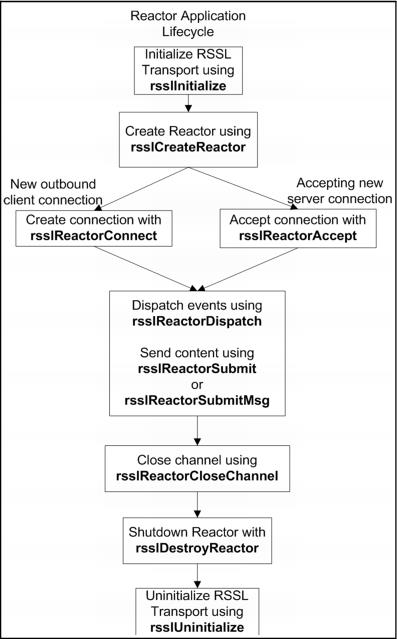

Transport API Reactor Application Lifecycle The following figure depicts the typical lifecycle of an application using the Transport API Reactor, as well as the associated function calls. The subsequent sections in this document provide more detailed information.  Figure 5. Transport API Reactor Application Lifecycle